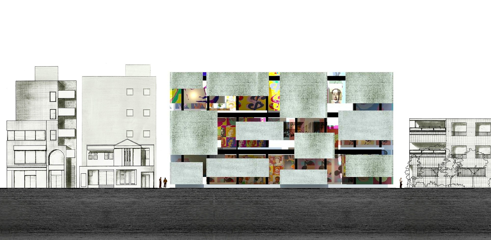
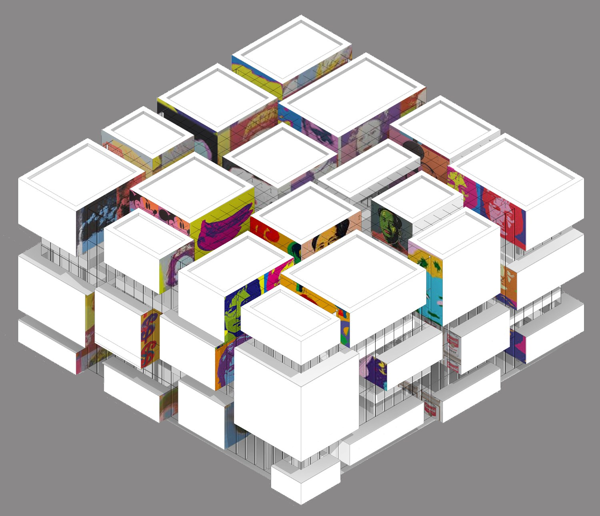
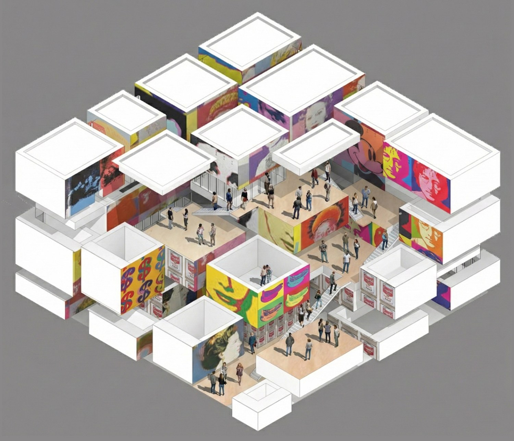
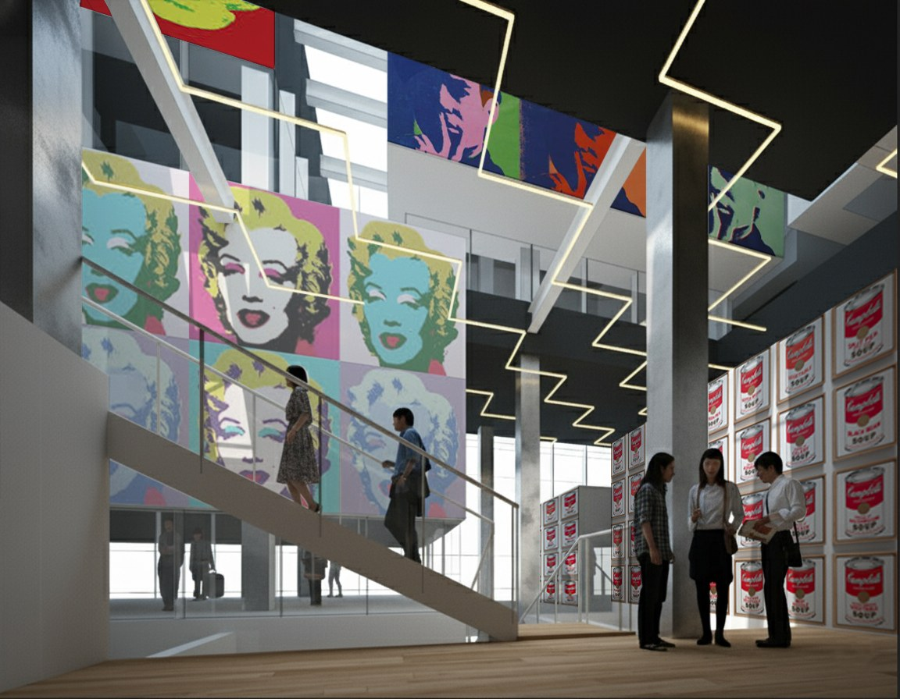
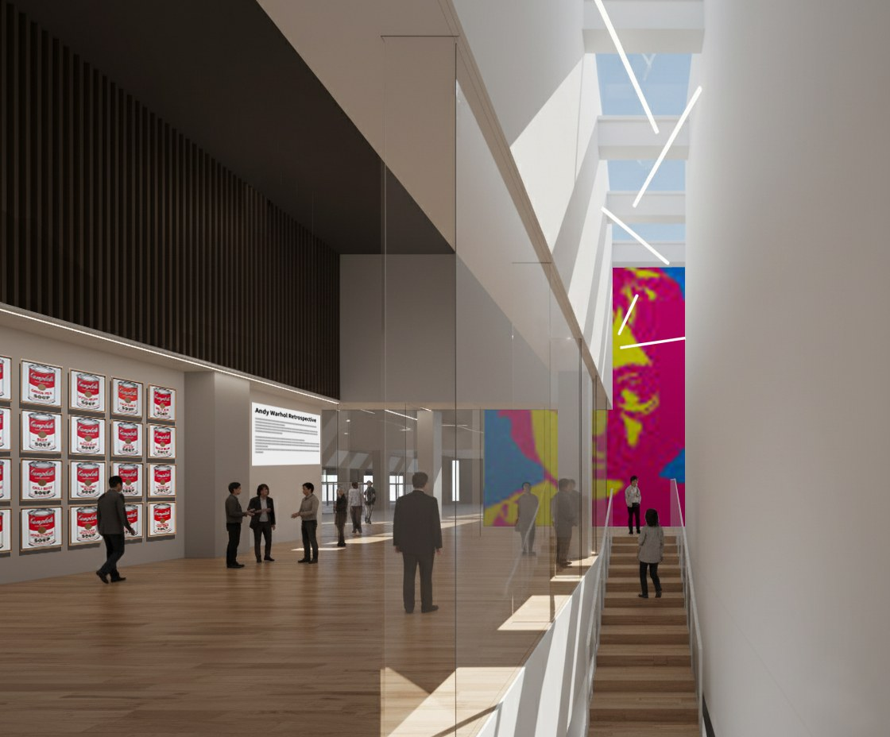
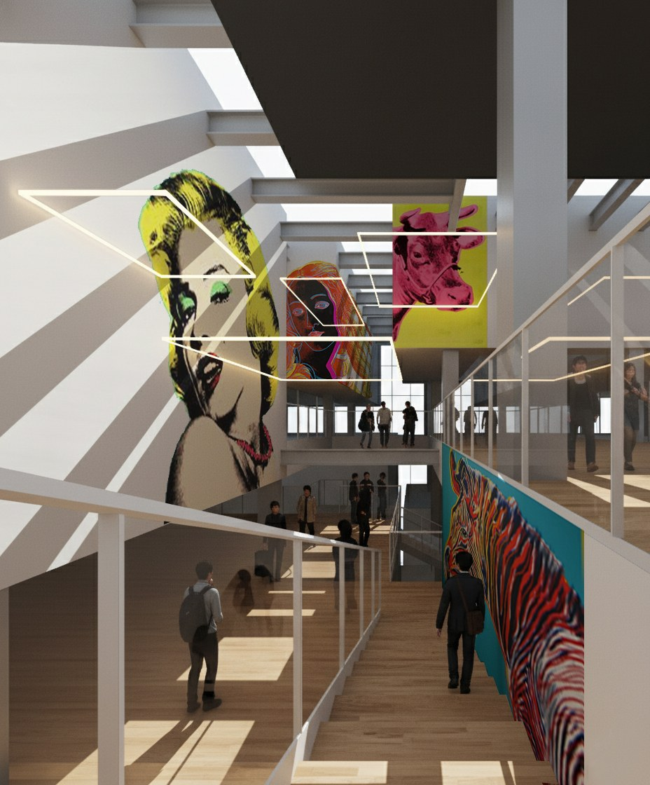
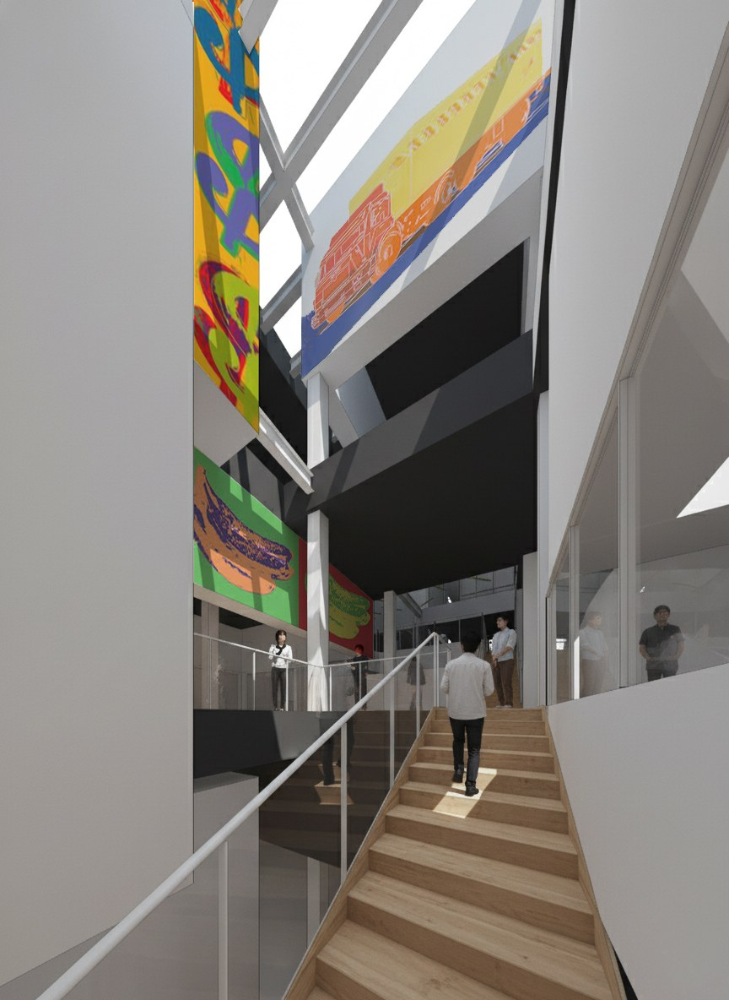
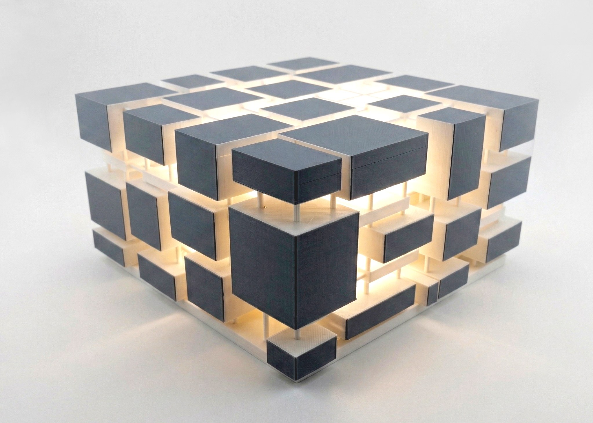

Andy Warhol museum
ポップアートの巨匠、アンディ・ウォーホルの作品を展示する美術館の計画。
ウォーホルがシルクスクリーン印刷を駆使した反復と複製の美学で名を馳せたように、縦横に展示室のボックスが複製された構成になっています。
ボックスの内側はニュートラルな展示空間となっている一方、外側はウォーホルのアートワークで埋め尽くされています。
来館者がボックス間を移動するシークエンスの中で、展示室内のホワイトキューブ、壁一面の強烈なアートワーク、街の景色が交互に移り変わります。







